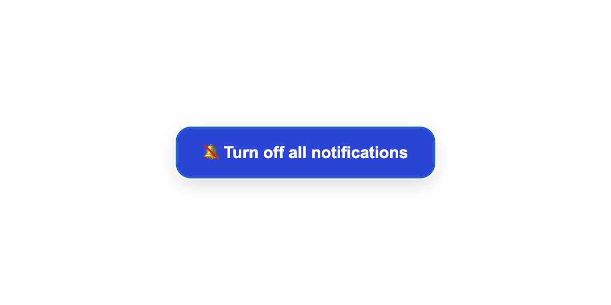
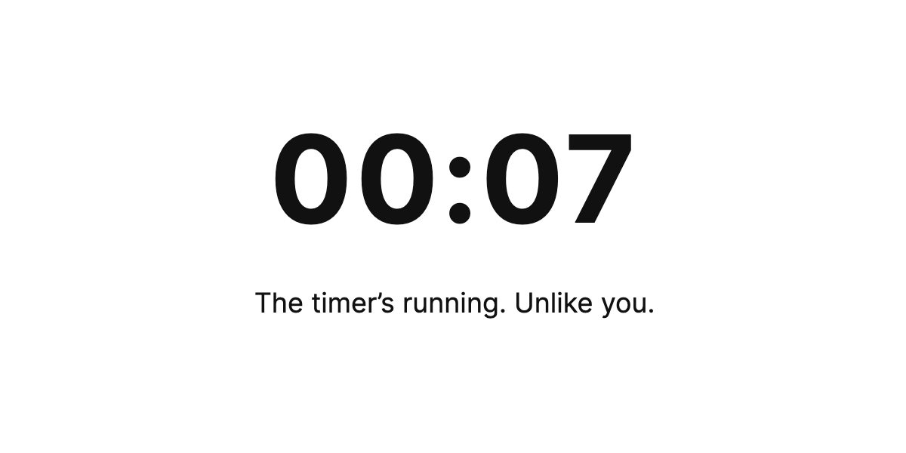
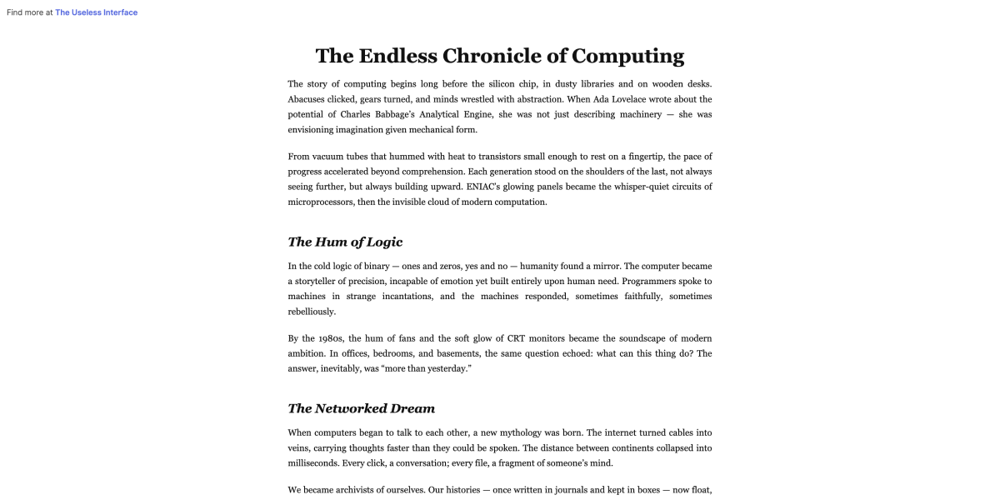
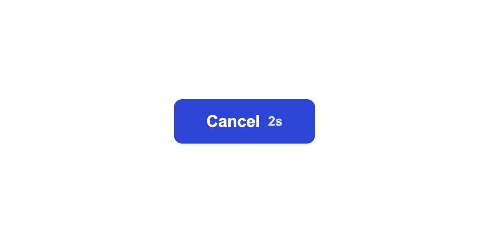
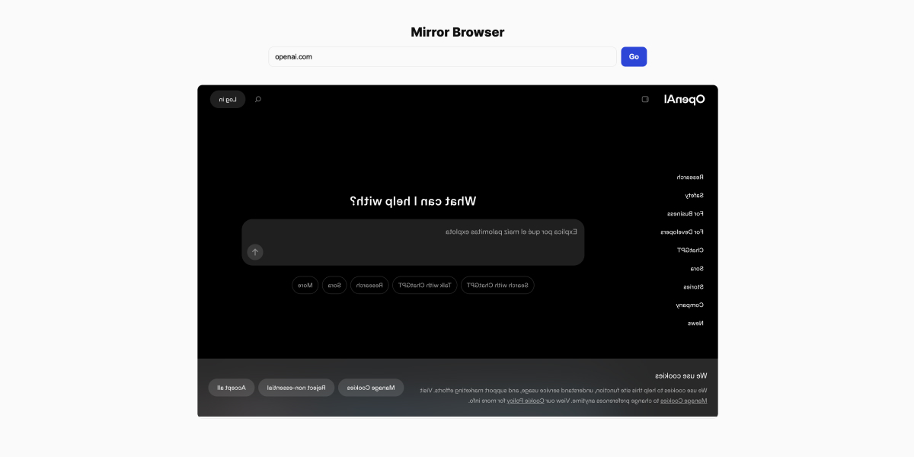
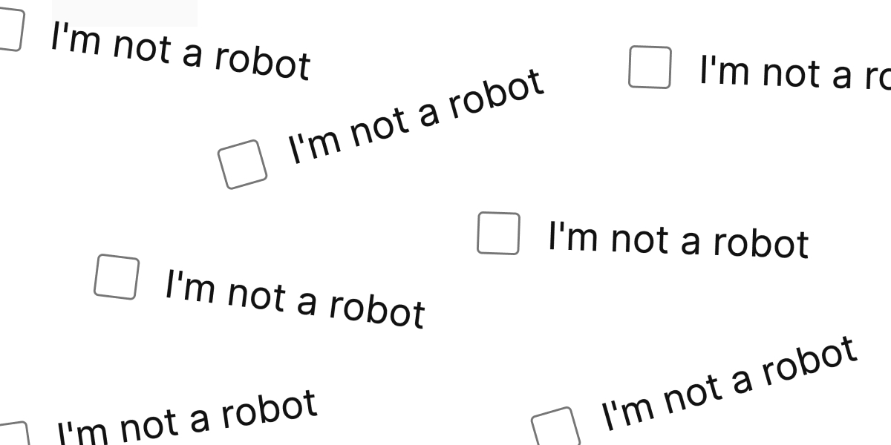
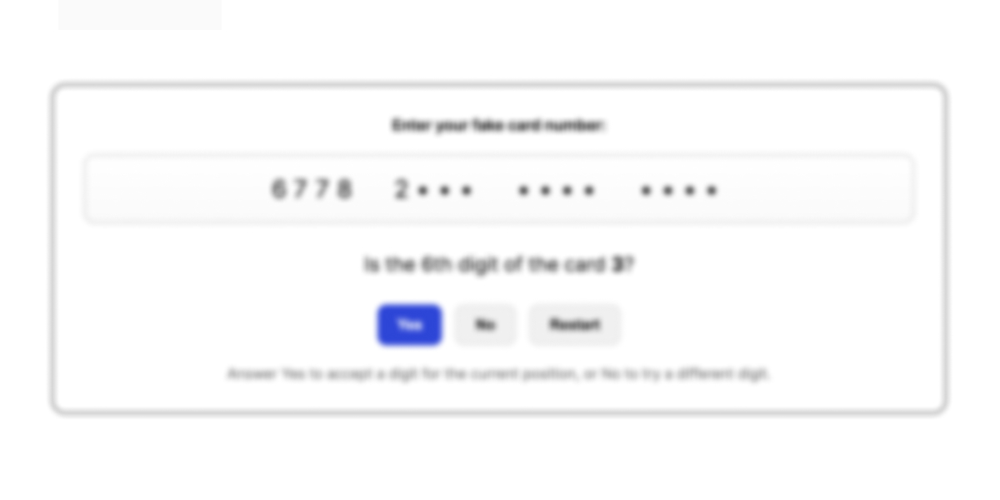
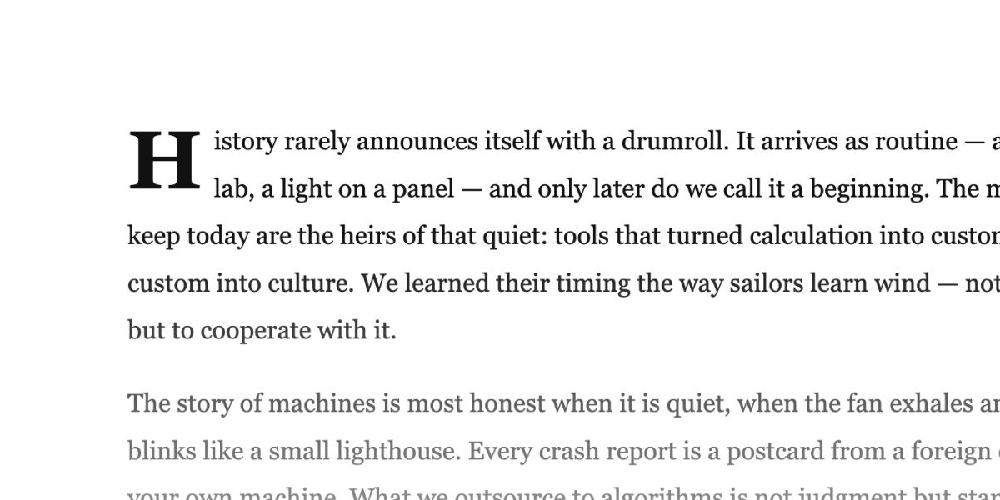
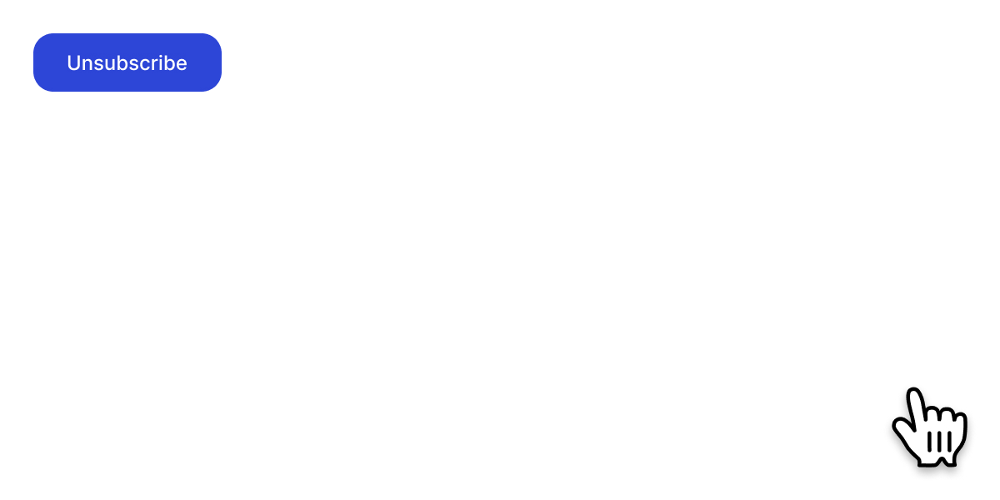

Oct 21, 2025
[010] Turn off all notifications
Even when you try to turn everything off, the system has to have the last word.
View demo →

Oct 20, 2025
[009] Procrastination Timer
If you’ve come this far already, you might as well waste a minute on the procrastination timer.
View demo →
Oct 17, 2025
[008] Mirror Cursor
There’s no strong reason behind this, it just feels interesting and useless.
View demo →

Oct 16, 2025
[007] Infinite Scroll
Those apps like Instagram and X never run out of content. So why should my website?
View demo →

Oct 15, 2025
[006] Button Loop
If you don’t have space for all the buttons you need, just loop them.
View demo →

Oct 14, 2025
[005] Mirror Browser
This is a sample description for post number 6. It demonstrates how multiple posts stack along the left side of the page.
View demo →

Oct 13, 2025
[004] Human Captcha
A robot can figure out where the stairs are in a photo, but there’s something it can’t do.
View demo →

Oct 12, 2025
[003] Credit Card
How can we stop people from buying pointless stuff online? This form is the answer.
View demo →

Oct 11, 2025
[002] Unscrollable Scroll
Moving ideas from the offline world into online. What’s stopping people?
View demo →

Oct 10, 2025
[001] Unsubscribe Button
If you’re already keeping the unsubscribe button out of sight, here’s a way to make the user experience even more entertaining.
View demo →
Hi, I'm Marko — welcome to a gallery of digital nonsense, a collection of experiments born from curiosity and AI tools.
When I’m not exploring the useless, I’m designing the useful.
Portfolio →
Mail me →